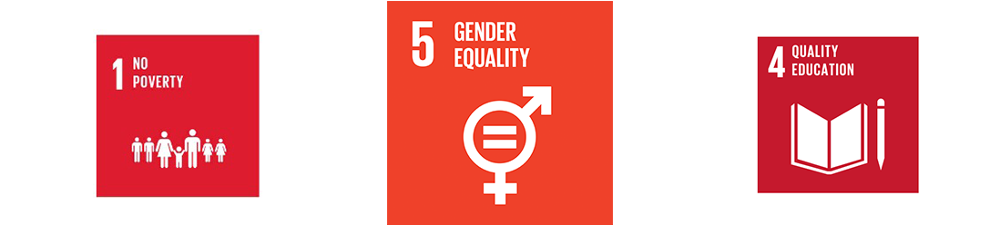

The pay gap is a heavily discussed topic, some people aren’t even sure if it exists. Others swear by it and work hard to convince others and minimize it. Gender equality is part of our core social structures, it intersects with a lot of other development goals that you don’t necessarily think of, mandatory paid leave is part of the no poverty goal for example. Gender equality is a fundemental human right: all people are entitled to the same opportunites regardless of sex. The pay gap is a big part of gender equality, are men and women getting the same hourly wage? What causes the pay gap? How can we prevent it?
 .With the unadjusted pay gap we look at the raw average of hourly wage between men and women. While the adjusted pay gap keeps things like employee’s age, education level, experience, occupation, industry, location, company and job title in mind. It’s difficult to find a reliable source for the adjusted pay gap because it takes a lot of factors into consideration. A study from glassdoor suggests that there is still a pay gap remaining if we keep the aforementioned factors in mind.
An added factor to the pay gap is the lack of women in senior and middle management positions. There is a big difference in gender at top earning wages. It’s difficult to understand why we find less women in these higher positions. Could this be evidence of the glass ceiling preventing women from reaching the top?
Another key factor in this discussionis the Women’s Economic opportunity index. The WEO index defines women’s economic oppertunity as “a set of laws, regulations, practices, customs and attidues that allow women to participate in the workforce under conditions roughly aquel to those of men, whether as wage-earning employees or as owners of a business.”
A lot of people think the pay gap is partly caused by education. The pay gap can be explained by factors such as schooling and work experience. But if you look at the numbers the education of women and men have been narrowing in richer countries like the netherlands. Yet there still remains a pay gap in these countries. What’s a more important factor is the characteristics of the jobs women tend to do. Women tend to go for part time jobs which changes their average income. The pay gap is not a direct metric of discrimination in the workplace. Rather it shows different social norms and expectation for men and woman. So what causes the remaining pay gap?
Woman have been having kids later in life in order to get their career going. However women still experience a so called “motherhood penalty”. Some studies suggest that women pick jobs that have flexible hours and are closer to home in order to take care of the family. This reduces their earnings. Women tend to take up more domestic jobs in the home and look for more flexibility in their jobs, things like shifting hours of work and rearranging shifts to accommodate family emergencies. Jobs like that tend to pay less per hour. This hasn’t been fully explored however. This study for example is from Denmark, a country that is praised for it’s gender equality.
The topic of gender equality is huge, it’s encouraged to look more into this subject. To close the pay gap we can start by raising the retention of women over the period of childbirth. Another method is alleviating the unpaid care work undertaken by mothers. But the most important thing is that we as a society change our expectations for women and men. As long as women are encouraged to take more flexible jobs closer to home they will earn less than men even if they are just as educated.